01 / USER
Understand the problem
People often know the symptom before they know the underlying issue. The experience needs to help them move forward without requiring technical vocabulary.
A product-design case study focused on turning complex IT support logic into a coherent SaaS experience across workflow building, dashboards, configuration, data-heavy operations and guided resolution.
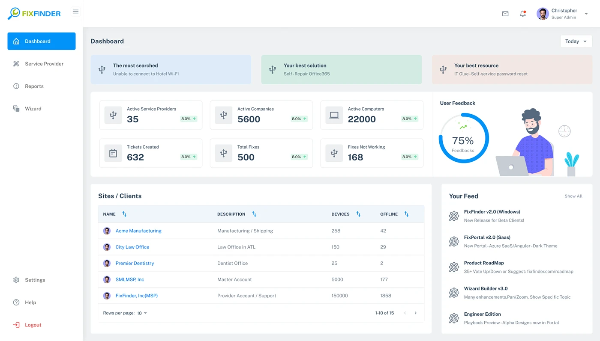
FixFinder sits across self-service support, troubleshooting workflows, knowledge, ticketing, applications, service providers and administration. The design problem was therefore larger than any individual screen.
The experience had to make a complex support system feel predictable at every level.
People often know the symptom before they know the underlying issue. The experience needs to help them move forward without requiring technical vocabulary.
Different answers can produce different next steps. The product therefore needs a flexible interaction model for branching logic.
Support teams need control over questions, answers, content, resources and outcomes without losing visibility of the overall journey.
I treated the product as a connected decision system. This helped align the user experience, workflow builder and operational interfaces around the same underlying model.
User arrives with an issue.
Identify what is happening.
Choose the relevant path.
Provide the next useful step.
Complete or escalate.
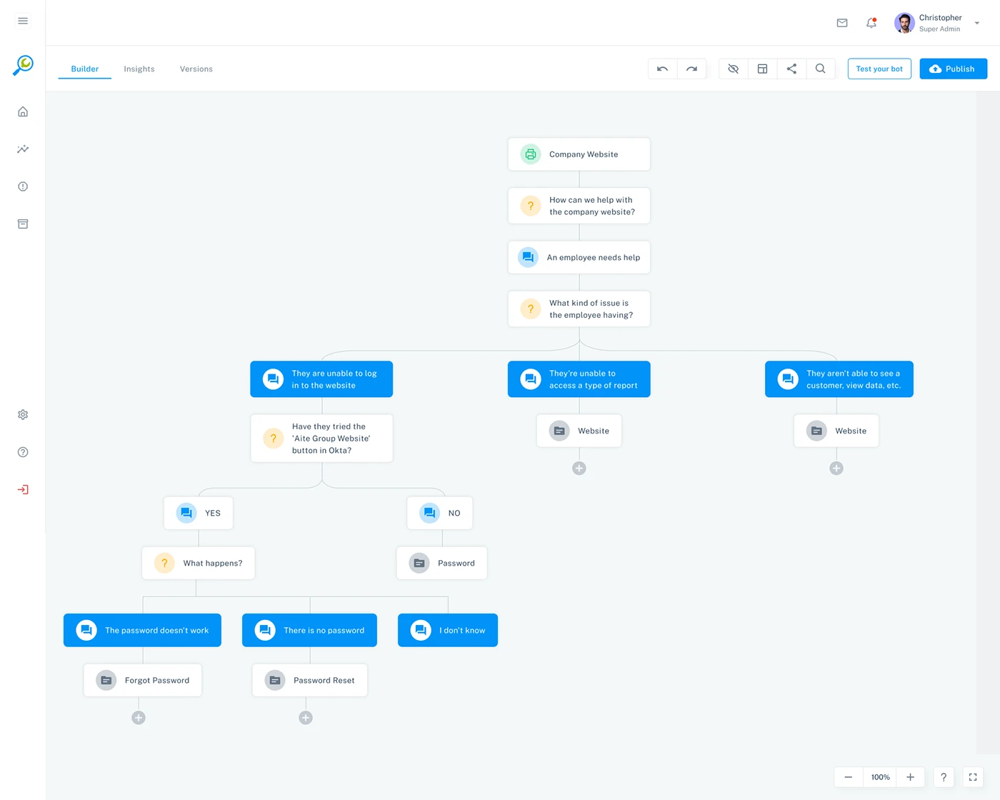
The architecture separates operational management from troubleshooting logic while keeping both inside one product ecosystem.
Operational views and authoring views serve different tasks, so the navigation needs to preserve that distinction.
Applications, tickets, resources, providers and workflow content need recognizable patterns across the system.
Primary tasks stay prominent while supporting configuration and metadata remain available without competing for attention.
Tables, search, pagination and reusable patterns support growing operational datasets.
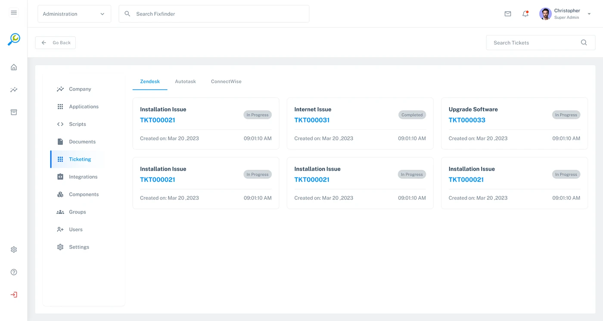
The workflow builder is the clearest expression of the product's complexity. The interface needs to expose relationships without turning configuration into a technical diagram.
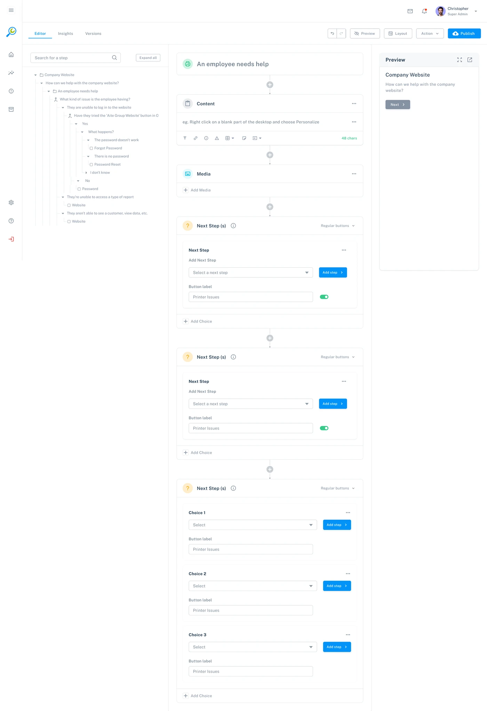
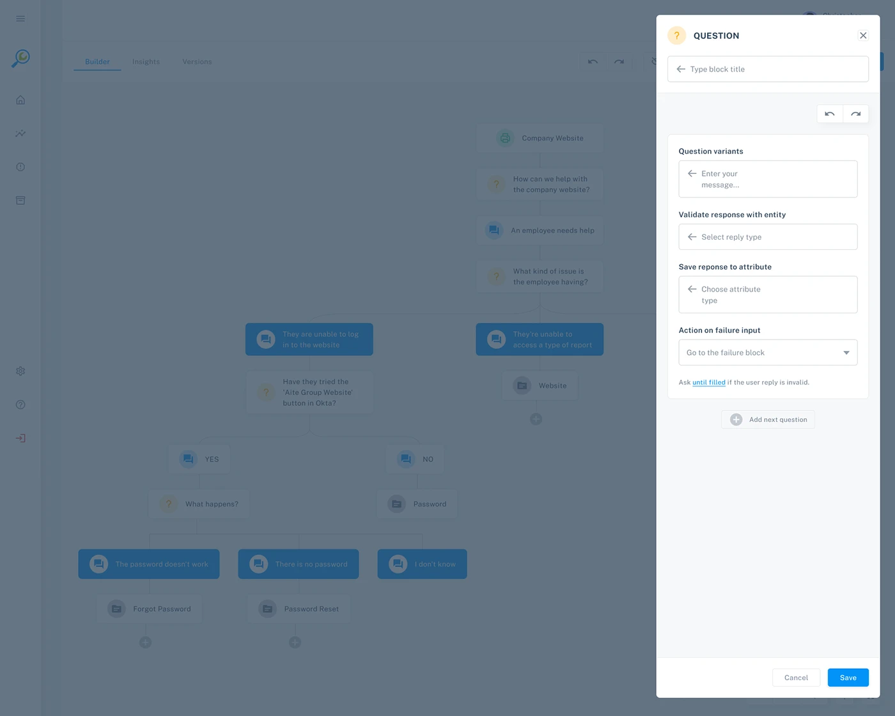
Questions, answers and resulting paths remain visually connected.
Selected branches and active choices need a clear visual state.
Configuration happens alongside the flow rather than in a disconnected utility screen.
The same model can start simple and expand into more detailed decision trees.
The builder turns abstract support logic into a sequence of authoring decisions. Each step makes the next action explicit.
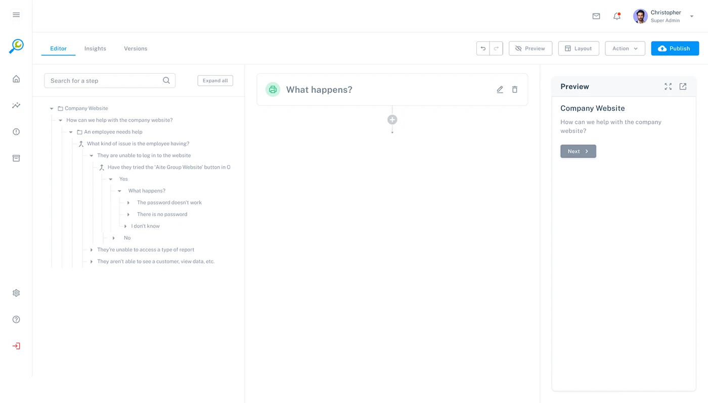
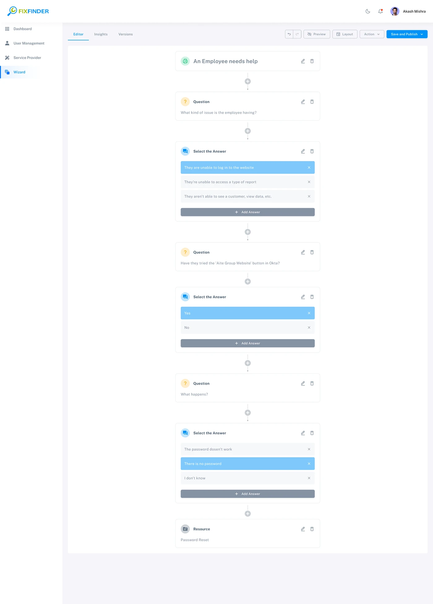
Beyond the builder, FixFinder includes operational screens where users need to scan records, understand status and act on individual items.
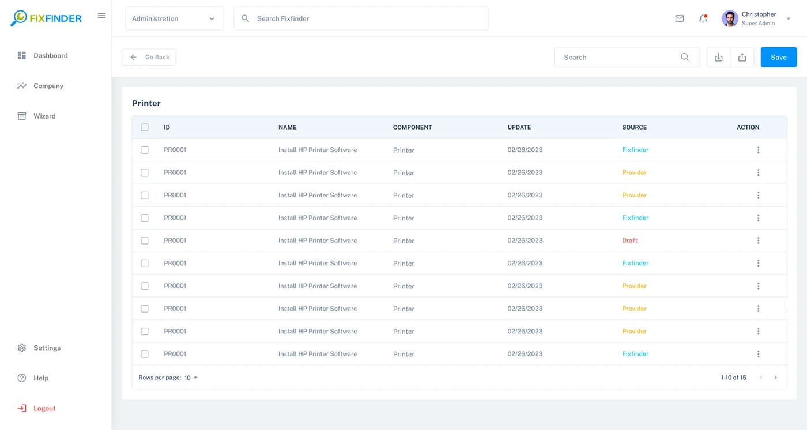
Consistent columns and spacing make dense records easier to scan.
Primary identifiers and status information remain visually distinct from supporting metadata.
Row-level actions stay close to the record they affect.
Rather than treating the design system as a collection of visual tokens, I approached reusable patterns as rules for how the product behaves.
Type · spacing · color · iconography
Inputs · cards · tables · controls
Builder · dashboard · configuration
Selected · editing · saved · status
Predictable product behavior
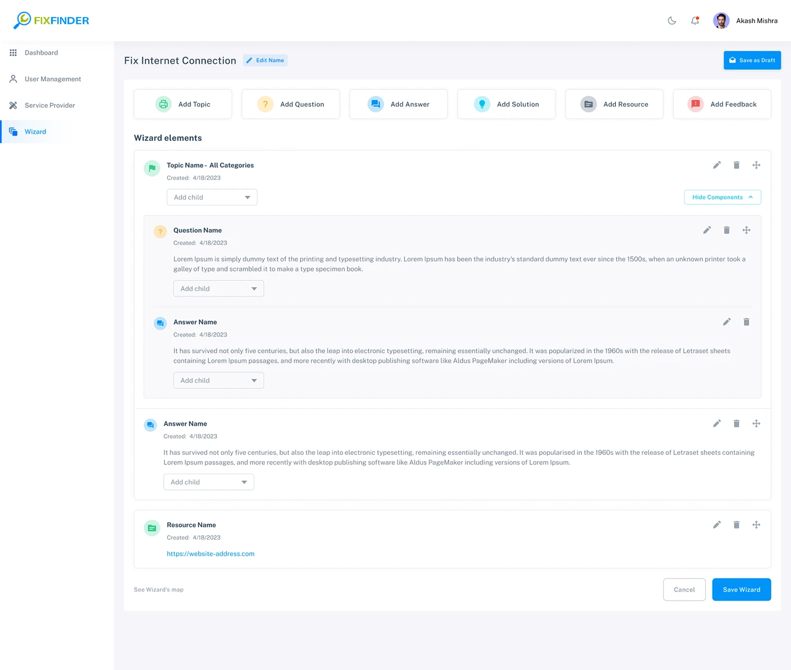
Configure → Branch → Connect → Preview → Publish
Question → Choose → Follow → Resolve
This distinction shaped how I thought about the product. The administration layer needs control and visibility; the user-facing experience needs clarity and momentum.
The UI work focused on making primary actions, status, relationships and information density understandable across different SaaS surfaces.
Important content and actions receive the strongest visual weight; secondary information remains available without competing for attention.
Interaction states communicate what changed and what the user can do next.
Enterprise screens need useful density, but density must be structured rather than decorative.
Repeated structures create familiarity across dashboards, tables, builders and configuration views.
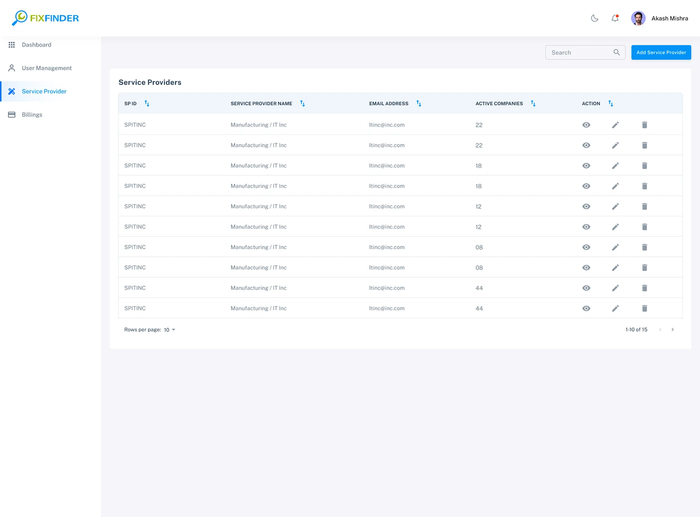
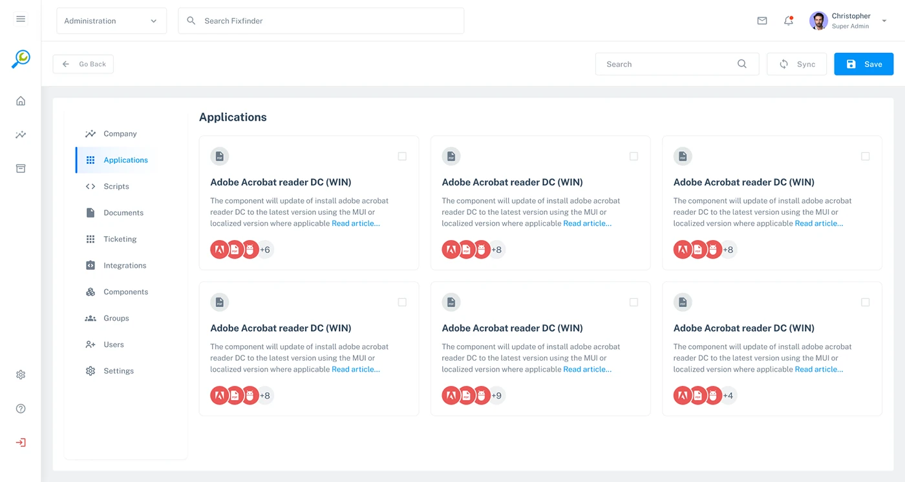
My contribution is best understood across the layers of the product rather than as a single visual deliverable.
Information architecture, user flows, interaction design, wireframes, prototyping and high-fidelity UI across complex SaaS surfaces.
Dashboards, workflow builders, configuration interfaces, tables, ticketing and self-service patterns.
Reusable components and interaction patterns that help different product surfaces feel like one coherent system.
Collaboration with product, engineering and QA, supported by implementation-ready specifications and design QA.
Users need help.
Answers determine paths.
Resources and solutions connect.
Tickets and providers are managed.
The user gets a clear next step.
I design for the system behind the screen.
A dashboard is not just a collection of metrics. A workflow is not just a series of boxes. A SaaS product is the relationship between information, decisions, interactions and visual language.
That is the level at which I approach complex product design.